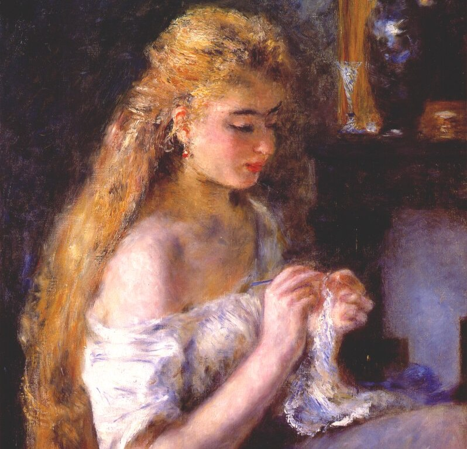

<!doctype html>
<html lang="en-US">
<head>
<title>Crochet Cliche - Home</title>
<meta charset="utf-8">
<meta name="viewport" content="width-device-width, initial-scale=1.0">
<meta name="description" content="Crochet tips for beginners">
<meta name="keywords" content="crochet, crafting, advice, yarn, projects">
<meta name="author" content="AYarnAsOldAsTime">
<meta http-equiv="refresh" content="60">

<style>
body {
   font-family: Verdana, Geneva, Tahoma, sans-serif;
}

.topnav {
    overflow: hidden;
    background-color: black;
}

.topnav a {
    min-width: 20%;
    display: block;
    float: left;
    color: lightgray;
    text-align: center;
    padding: 20px 20px;
    text-decoration: none;
    font-size: 15px;
}

.topnav a:hover {
    background-color: lightgray;
    color: darkorchid;
}

.active {
    background-color: darkorchid;
    color: darkcyan;
}

header {
    background-color: darkcyan;
    color: lightgray;
    text-align: center;
    padding: 1px;
    text-shadow:2px 2px darkslategray;
}

section {
    background-color: darkgray;
}

img {
    display: block;
    margin-left: auto;
    margin-right: auto;
}

footer {
    background-color: darkcyan;
    color: lightgray;
    text-align: center;
    padding: 20px;
}

</style>
</head>

<body>

</body>
<div class="topnav">
    <a class="active" href="index.html">Home Base</a>
    <a href="about.html">My Crochet Journey</a>
    <a href="tips.html">Tips</a>
    <a href="projects.html">My Most Inspired Projects</a>
</div>

<header>
    <h1 style="font-family:cursive;font-size:40px">Don't Be a Crochet Clich&eacute</h1>
    <h3>Avoid the snoozeworthy scarves that
        <br>
        litter the path to crochet mastery</h3>
</header>

<section>


<map name="crochetermap">
    <area shape="rect" coords="410,270, 455,300" alt="Lips" title="Tips" href="tips.html">
    <area shape="poly" coords="530,480, 590,480 590,660, 730,690, 520,750, 485,690" alt="Project" title="Projects" href="projects.html">
    <area shape="circle" coords="410, 150, 45" alt="Head" title="About" href="about.html">
</map>

</section>

<footer>
    <p>This site is intended for entertainment purposes only. If you are using crochet under medical advice, please consult a registered nurse crochetier. On the off chance your insurance doesn't cover such a practicioner, you may want to find a doctor that uses more tradional treatments. But hey, do what works for you.</p>
</footer>

</body>
</html>
